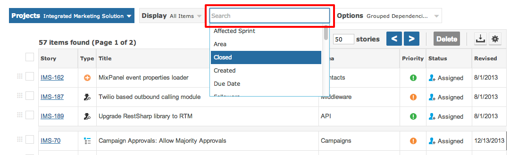

The instant search filter to the left of the grid controls the data displayed within the grid.

The grid will be refreshed with live results every time you select or un-select a search filter option.